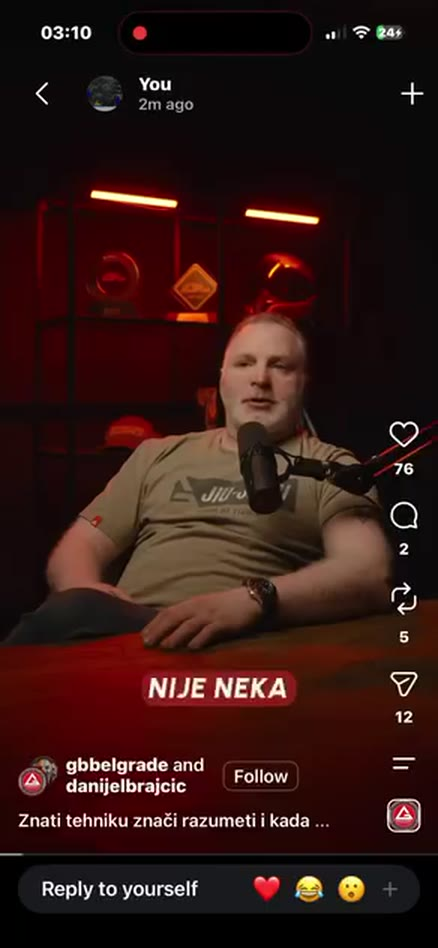
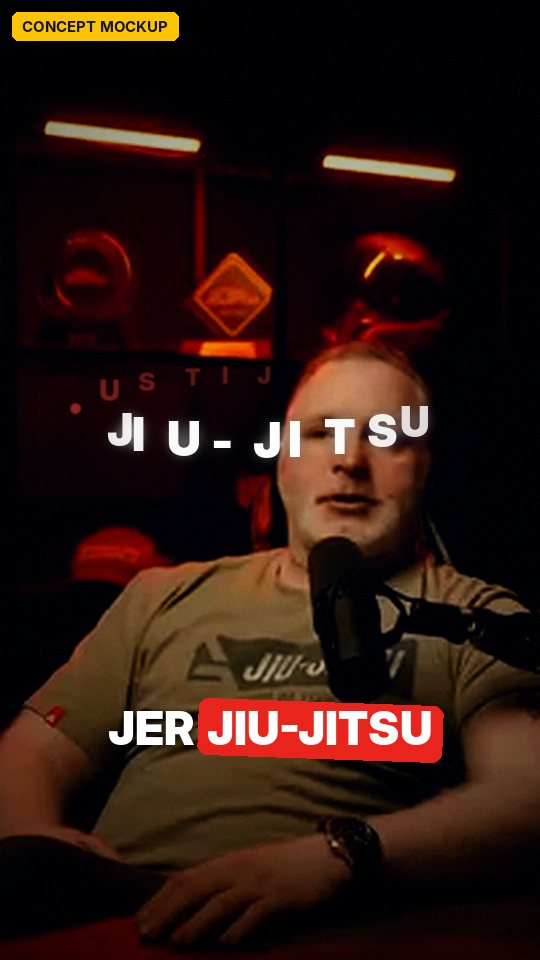

S1
Hook
Orbit
- Output
- 00:00:00:00 → 00:00:01:19
- Source
- 00.00s → 01.62s · Wide A


„Jer jiu-jitsu nije neka…“
“Because jiu-jitsu isn't some…”
Why this effect
The first frame has to stop the scroll. The topic word orbits the speaker's head, so the viewer knows what this is about before he finishes the first word.
Animation & timing
| 00:00:00:00 | Ring of “JIU-JITSU •” scales 0→100% (8 fr, ease-out back). 12° tilt, one revolution per 2.4 s. |
| 00:00:00:00 → end | Back half of the ring passes behind the head (roto mask on a duplicate V2 layer). Slow push on V1, 100→106%. |
| Captions | “JER” then “JIU-JITSU” pops in a red pill. |
Sound
Sub hit + airy swirl whoosh on frame 0. Music bed starts with a downbeat.
Into the next scene
Paper-tear wipe (6 fr) on the camera change. The 0.38 s breath between “neka” and “skočimiš” is cut here, so the jump cut lands on a real angle change and disappears.